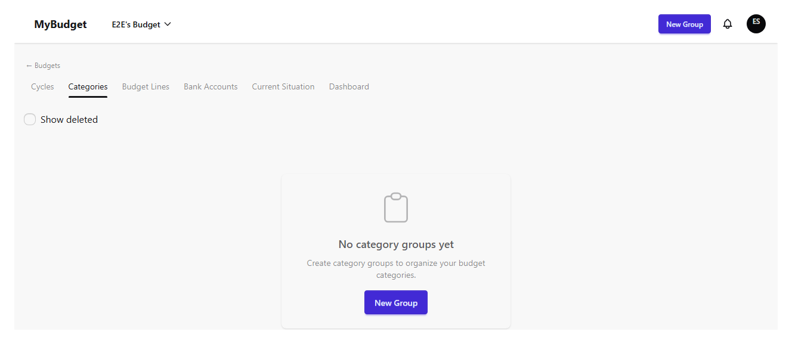
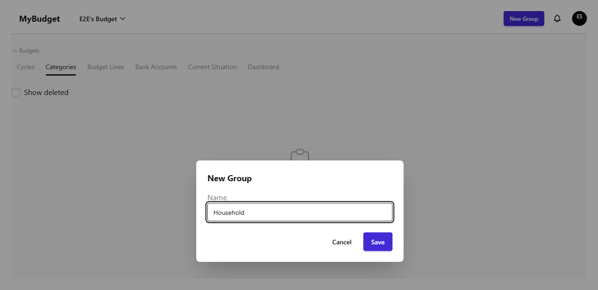
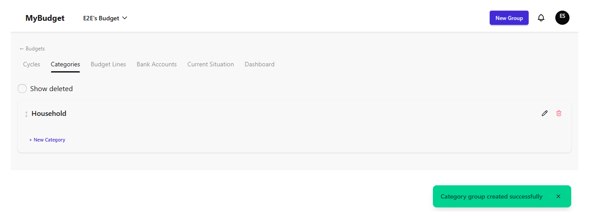
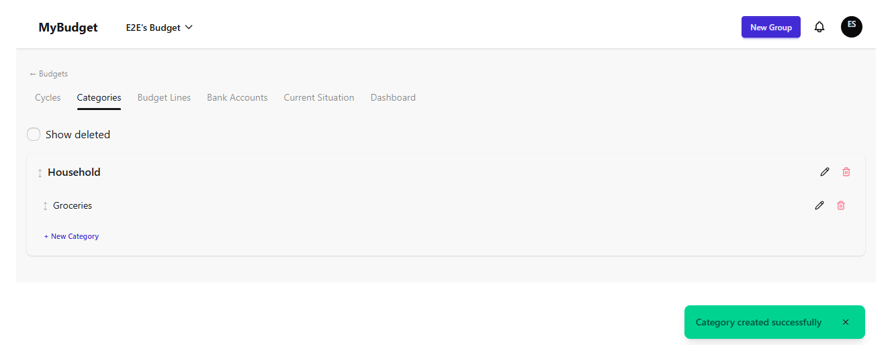
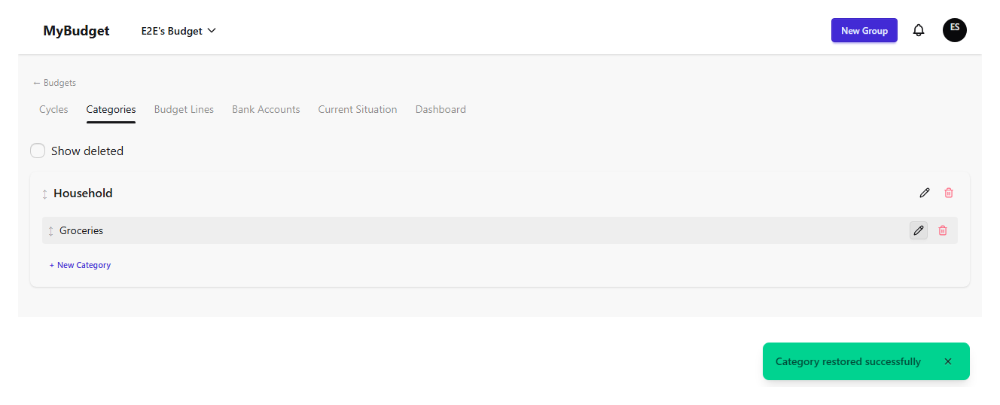

Categories
Categories are how spending gets classified inside a budget, organized into groups (for example "Household" or "Transport") that each hold one or more categories. Groups and categories are shared across every cycle in the budget — you set them up once, then budget lines and execution reference them cycle after cycle.
The category tree
A freshly created budget shows an empty state instead of the tree, with a shortcut to create the first group. Only admins and the owner can create, edit, delete, or reorder groups and categories; everyone else sees the same tree read-only, without the drag handles or action icons.

Creating a group
"New group" asks only for a name; group names must be unique within the budget.


Creating a category
"+ Create category" inside a group opens the same kind of form, nested under that group. Category names must be unique within their group, but the same name can be reused in a different group.

Reordering, renaming, deleting, and restoring
Admins and the owner can drag groups and categories by their handle to reorder them, or double-click a name to rename it inline. Deleting a group or a category is a soft delete behind a confirmation dialog — deleting a group also removes the categories inside it. Turning on "Show deleted" reveals removed groups and categories with a "Deleted" badge and a Restore action.
